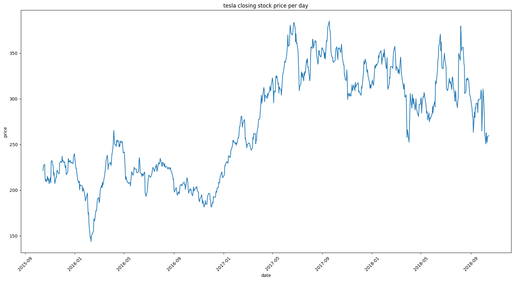

What is a time series?#
A time series is any quantifiable metric or event that takes place over a period of time.
Examples:
average heart rate per hour over a month
daily closing value of a stock over a year
number vehicle accidents in a certain city per week over a year.
Recording this information over any uniform period of time is considered as a time series.
There is a frequency (daily, weekly, hourly etc) of the event and a length of time (a month, year, day etc) over which the event takes place. For a time series, the metric is recorded with a uniform frequency throughout the length of time over which we are observing the metric. In other words, the time in between each record should be the same.
Tesla Stock Prices#
from plotly/datasets
import csv
from datetime import datetime
import pandas as pd
import matplotlib.pyplot as plt
with open('../inputs/tesla-stock-price.csv', "r") as csv_file:
csv_reader = csv.reader(csv_file, delimiter=",")
for row in csv_reader:
print(row)
break
['date', 'close', 'volume', 'open', 'high', 'low']
data = pd.read_csv('../inputs/tesla-stock-price.csv')
df = pd.DataFrame(data, columns = ['date', 'close', 'volume', 'open', 'high', 'low'])
df.head()
| date | close | volume | open | high | low | |
|---|---|---|---|---|---|---|
| 0 | 11:34 | 270.49 | 4,787,699 | 264.50 | 273.88 | 262.2400 |
| 1 | 2018/10/15 | 259.59 | 6189026.0000 | 259.06 | 263.28 | 254.5367 |
| 2 | 2018/10/12 | 258.78 | 7189257.0000 | 261.00 | 261.99 | 252.0100 |
| 3 | 2018/10/11 | 252.23 | 8128184.0000 | 257.53 | 262.25 | 249.0300 |
| 4 | 2018/10/10 | 256.88 | 12781560.0000 | 264.61 | 265.51 | 247.7700 |
####### delete rows with empty values ########
df = df.dropna()
df.head()
| date | close | volume | open | high | low | |
|---|---|---|---|---|---|---|
| 0 | 11:34 | 270.49 | 4,787,699 | 264.50 | 273.88 | 262.2400 |
| 1 | 2018/10/15 | 259.59 | 6189026.0000 | 259.06 | 263.28 | 254.5367 |
| 2 | 2018/10/12 | 258.78 | 7189257.0000 | 261.00 | 261.99 | 252.0100 |
| 3 | 2018/10/11 | 252.23 | 8128184.0000 | 257.53 | 262.25 | 249.0300 |
| 4 | 2018/10/10 | 256.88 | 12781560.0000 | 264.61 | 265.51 | 247.7700 |
# conditionally delete rows where date is in other format
print(len(df))
to_be_dropped = []
for index in df.index:
data = str(df.loc[index]['date'])
#print(index, data)
if data.find("/") == -1:
to_be_dropped.append(index)
print(to_be_dropped)
df = df.drop(index=to_be_dropped)
print(len(df))
757
[0]
756
df.head()
| date | close | volume | open | high | low | |
|---|---|---|---|---|---|---|
| 1 | 2018/10/15 | 259.59 | 6189026.0000 | 259.06 | 263.28 | 254.5367 |
| 2 | 2018/10/12 | 258.78 | 7189257.0000 | 261.00 | 261.99 | 252.0100 |
| 3 | 2018/10/11 | 252.23 | 8128184.0000 | 257.53 | 262.25 | 249.0300 |
| 4 | 2018/10/10 | 256.88 | 12781560.0000 | 264.61 | 265.51 | 247.7700 |
| 5 | 2018/10/09 | 262.80 | 12037780.0000 | 255.25 | 266.77 | 253.3000 |
df['date'] = pd.to_datetime(df['date'], dayfirst=False, yearfirst=True)
df.head()
| date | close | volume | open | high | low | |
|---|---|---|---|---|---|---|
| 1 | 2018-10-15 | 259.59 | 6189026.0000 | 259.06 | 263.28 | 254.5367 |
| 2 | 2018-10-12 | 258.78 | 7189257.0000 | 261.00 | 261.99 | 252.0100 |
| 3 | 2018-10-11 | 252.23 | 8128184.0000 | 257.53 | 262.25 | 249.0300 |
| 4 | 2018-10-10 | 256.88 | 12781560.0000 | 264.61 | 265.51 | 247.7700 |
| 5 | 2018-10-09 | 262.80 | 12037780.0000 | 255.25 | 266.77 | 253.3000 |
fig, ax = plt.subplots(figsize=(20, 10))
x = df['date'].values
y = df['close'].values
ax.plot(x,y)
plt.xticks(rotation=45)
plt.xlabel('date')
plt.ylabel('price')
plt.title('tesla closing stock price per day')
# Display the plot
plt.show()

# reshape the data from (n,) to (n,1) and extract as numpy arrays
x1 = df['date'].values.reshape(-1, 1)
y1 = df['close'].values.reshape(-1, 1)
print(type(x1))
print(type(y1))
<class 'numpy.ndarray'>
<class 'numpy.ndarray'>